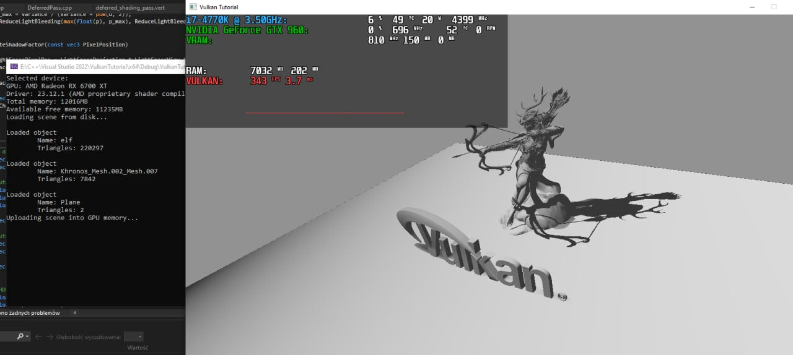
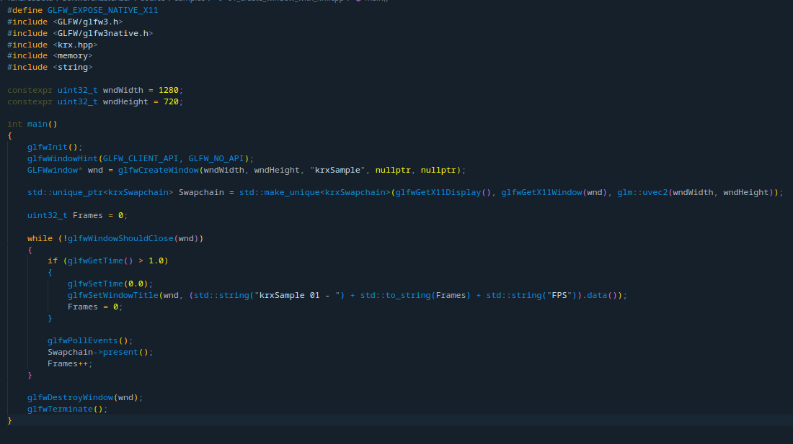
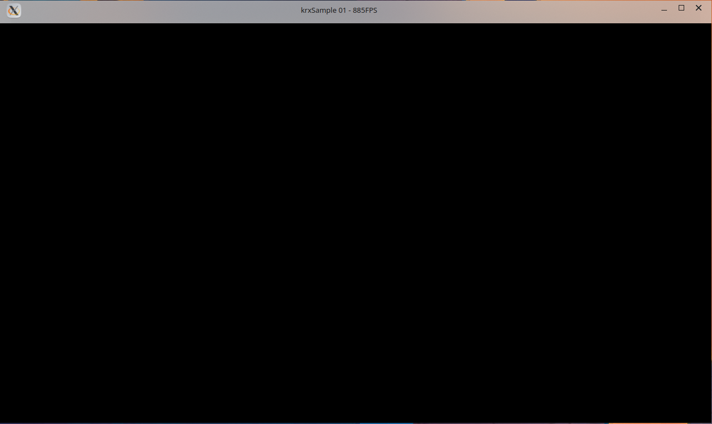
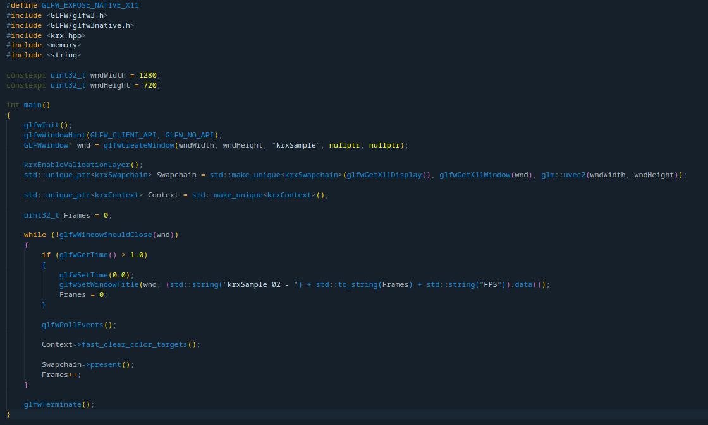
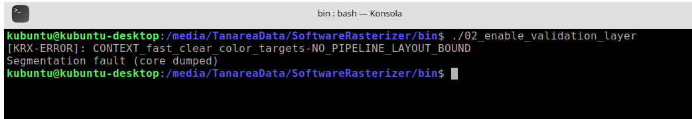
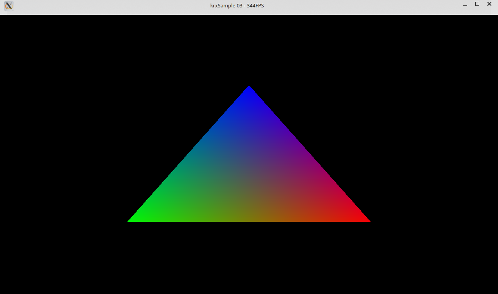
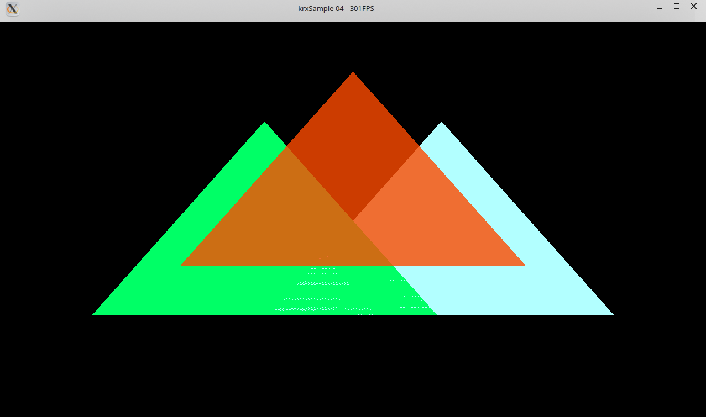

Who am I?
I am from Poland, I have borned in 2003th. I live in Strachoń which is in central Poland. I am interested with computers hardware,
programming applications, raster graphics and 3D graphics.
Because of interests within computers I finished mid-school with proffesion of IT specialist (details about this school you can find
here).
Furthermore I was 2 times in final of Motorola Science Cup in Cracow. You can look for projects which I wrote in
2022 and
2023 for these events
(remember that both are in only Polish language).
I said that I am interested about programming...
Starting from base school I started programming from Python 3. Then I didn't write any presentable program. Later, in mid-school I started interest of 3D graphics programming. Then I started learning this with OpenGL and C++ simultaneously.
That was in 2021th. After Motorola Science Cup events I also started learning DirectX 11, Vulkan and DirectX 12. Furthermore I learned something about bash scripting and powershell scripting both in Windows and Linux operating systems.
After these years I can present some projects on my GitHub. Let me do this here.

This is example scene with deferred shading in Vulkan. I implemented here directional light within basic Phong shading model and Variance Shadow Mapping technique for generating shadows.
This was writed and tested only against AMD Radeon RX 6700XT hardware, so on other hardware it may not work.
As you can see in repository - this is written on Windows platform with MSBuild system.
For generating SPIR-V shaders I used GLSL sources.
KRX is my own API for rendering 3D graphics. All computes are performed on CPU. It has implemented many features - viewport, programmable shaders, depth testing, blending.
Samples showed below runs on Intel Core i7-4770K @ 4400MHz, Linux Kubuntu 22.04 LTS and X11 graphical environment.
I wrote some samples for show how it works:


In first sample I just created window with KRX swapchain. It is so simple - just pass X11 display, X11 window and size of your swapchain.
If you want resize swapchain, just re-create swapchain with new size.


In second sample I present how to enable validation layer and how it looks like in console.

Third sample shows typical "Hello triangle" example. As we can see on image triangle has interpolated colors - using barycentric interpolation. On my system in peak I achieved about 400 FPS while rendering it.
I could not insert here code because it is too long, but don't worry - whole sample has about 120 lines of code.

In fourth sample we can see more features - blending, depth testing and uniform buffers support for shaders.
TEMath is project where I learned some mathemathic required for 3D rendering. It allows for arithmetical operations on 2, 3 and 4 elemental vectors, doing transforms with matrix 2x2, 3x3 and 4x4.
On last mentioned matrix I implemented extra methods, such as creating projection matrixes (perspective and orthogonal). Additionally I implemented AVX and AVX2 support for faster math,
but while benchmarking it was as fast as SIMD assembly generated by gcc compiler, so I decided to remove manual SIMD support.